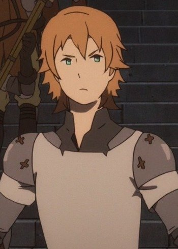
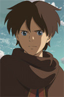
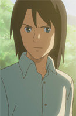
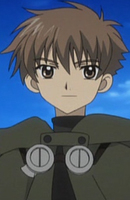

|  |
Ariel |
- Maquia - When The Promised Flower Blooms
|
Ariel is the adoptive son of Maquia. When he was a child, he was playful and vivacious atttitude. He did sincerely loved his mother dearly, always wanting to protect her. As he grew older, he started to detest his mother as nasty rumors began to spread about them. His dejected feelings towards his mother were because of his frustration of not being able to protect Maquia. He is a soldier of Mezarte Kingdom's army. Despite rumors and feelings, he loves his mother. |
 |
Haku |
|
Haku is Chihiro Ogino's first friend in the Spirit World. He studies with sorceress Yubaba and has magical powers. He is know as Nigihayami Kohakunushi. |
 |
Kiritsugu Emiya |
|
Kiritsugu Emiya is Shirou Emiya's foster father and the master of Saber. He is not known as Magus Killer. His does not believes in sacrifice. |
 |
Nuts |
- Yes! Pretty Cure 5
- Yes! Pretty Cure 5 Movie: Great Miraculous Adventure of the Mirror Country!
- Yes! Pretty Cure 5 GoGo!
- Yes! Pretty Cure 5 GoGo!: Happy Birthday in the Sweet Kingdom
- Pretty Cure All Stars GoGo Dream Live!
- Pretty Cure All Stars Movie DX: Minna Tomodachi Kiseki no Zenin Daishuugou
- Pretty Cure All Stars Movie DX2: Kibou no Hikari Rainbow Jewel o Mamore
- Pretty Cure All Stars Movie DX3: Reach the Future! The Rainbow Flower that Connects the World
|
Nuts is one of the princes from the Palms. He transform a squirrel to a clerk of jewwlry shop. Nuts is serious, distrustful and stubborn. He believes that the truth is the best and never lies. |
|  |
Shin |
- Children Who Chase Lost Voices
|
Shin is younger brother of Shun. His stubborn but loves Asuna. |
 |
Shouya Ishida |
|
Shouya Isida is the boy who bullied Shouko Nishimiya. Since he has been ostracizated for years, he becomes more socially awkard. He can be bully but has a caring side as well. |
|  |
Shun |
- Children Who Chase Lost Voices
|
Shun is a mysterious boy from Agartha. He is the brother of Shin.
|
|  |
Syaoran |
- Tsubasa Chronicle
- Tsubasa Chronicle The Movie: The Princess in the Birdcage Kingdom
- Tsubasa Chronicle 2nd Series
- Tsubasa Chronicle: Tokyo Revelations
- Tsubasa Chronicle: Spring Thunder
|
Syaoran is a companion and love interest of Sakura. Syaoran is strong , kind, cheerful and knightly. He was adopted by Fujitaka, an archaeologist. He is known for his kind nature and his calm determination. He is an excellent martial artist and extensive knowledge of various languages. |